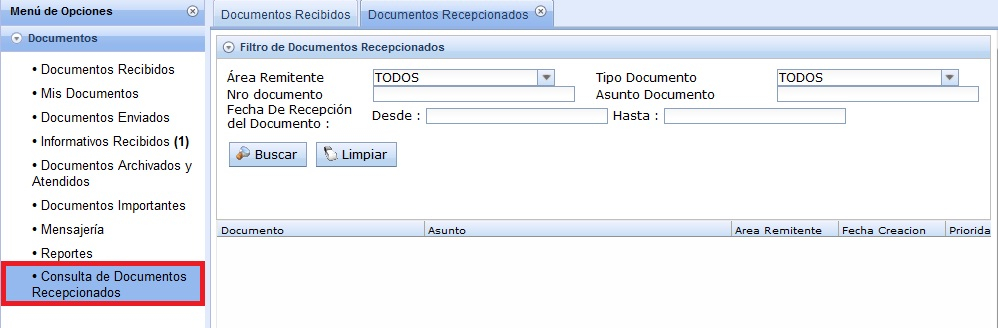
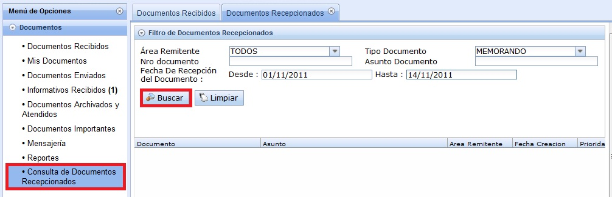
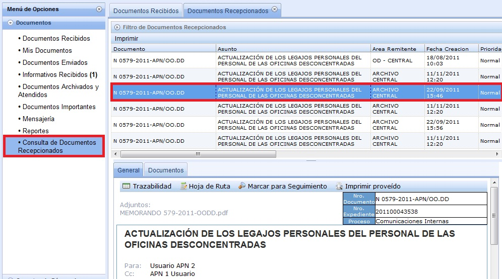

Consulta de Documentos Recepcionados:
El usuario ingresa a Consulta de Documentos Recepcionados, para visualizar sus documentos (informativos y recepcionados).

Ingresa datos en los filtros como: Área Remitente, Nro. Documento, Fecha de Recepción del Documento (Desde, Hasta), Tipo de Documento, Asunto de Documento. Luego, selccionamos "Buscar".

Al seleccionar se muestra la siguiente pantalla: En donde aparece una lista de Documentos correspondientes a tu filtro de Búsqueda. Al seleccionar el Documento, en la parte inferior se muestra el detalle del Documento.

Created with the Personal Edition of HelpNDoc: Full featured multi-format Help generator